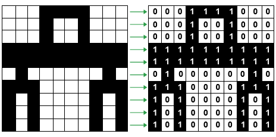

Heim
Binære tallsystemet
Fargar
Eit bilde består av mange små bildepunkt, eller pikslar. Det er ikkje noko fast mønster i kor stort kvart bildepunkt skal være. Sidan auga våre er så gode treng ein mange nyansar av kvar farge, og mange bildepunkt, for at auga våre ikkje ser at bildet er oppstykka. Dess fleire bildepunkt eller pikslar det er på bildet, dess meir plass tek det. For eksempel vil eit bilde som er 8x8 størrelse ved berre å bruke svart og kvit farge, vil det være 64 bit stort. Under kan du sjå eit bitmap av ein teikning av ein robot, som er 100bit stor. Dersom denne roboten og skal ha fargar, treng kvart av desse punkta 24bit, dermed er heile bildet på 2400 bit, dersom ein skal ha farge ved hjelp av rgb på heile bildet.
